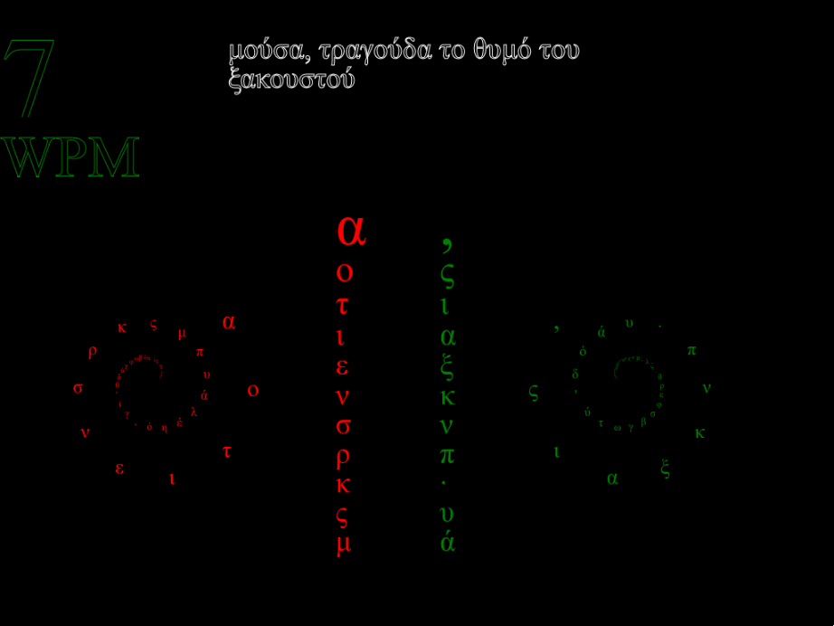

The Brave New World of Text
‐ A new paradigm in it's infancy

Battle through famous works such as Wuthering Heights by Emily Brontë or the Ιλιάδα by Homer.
Four unique weapons in the fight against illiteracy
I: The Treeboard
The trendy treeboard can be operated with only one hand. It's highly advanced layout is based upon the advanced mathematics of Huffman tree's. Leveraging state of the art computer science to allow for 60-80% of keys statistically to be outputed with only tree keypresses. This while only using 7 keys!
→ Go
II: The Keyboard
For the more traditionally inclined, a standard onscreen replica is supported. The hardned nerd will know where all the keys are on this one, but is he really faster when tasked with writing in different languages?
→ GoIII: The Quadboard
Whereas the more fashinable and daring would of course take the speedy quadboard. Once the top 20 % used symbols are learned typing with this board becomes a breeze.
→ GoIV: The Linear
Seemingly the nimble linboard seems to be only for the masochistically inclined. Yet it's second slider with values dynamically sorted by frequency, the skilled typist can master and start to appriciate it's simple elegance.
→ Go